Windows
Windows 10 et 11 · 64 bits
Jeu de plateforme troll · 1 à 4 joueurs · Gratuit
Une histoire vraie. Des pièges qui mentent.
Suis Oswel, de l'atelier de mécanique de Douala jusqu'à son propre métier. Cinq mondes où le sol tombe, les portes s'enfuient et les pièces mentent. Ça plante ? On recommence.
Version 1.5.0 · gratuit, sans publicité, sans compte. Les fichiers sont hébergés sur GitHub.
Windows 10 et 11 · 64 bits
64 bits · toutes distributions
Dans un terminal, dans le dossier du fichier téléchargé :
AppImage
chmod +x Oswels-Trap-*.AppImage && ./Oswels-Trap-*.AppImageUbuntu / Debian / Mint
sudo apt install ./Oswels-Trap-*.debArch / CachyOS / Manjaro
sudo pacman -U Oswels-Trap-*.pacmanAndroid 7 ou plus récent
.apk téléchargé (dans les notifications ou le dossier Téléchargements).et tout appareil avec un navigateur récent · sans installation
Le jeu complet tourne dans Safari, Chrome ou Firefox. Sur iPhone, ajoute-le à l'écran d'accueil : il s'ouvre en plein écran comme une application et marche ensuite même sans internet.
Une manette Bluetooth (PS4, PS5, Xbox) marche aussi. Les voix se téléchargent la première fois qu'on les entend. Ajouté à l'écran d'accueil, le jeu garde ta sauvegarde ; sinon, Safari peut l'effacer si tu ne joues pas pendant plusieurs semaines.
Lance la version PC et choisis Réseau local : les amis scannent le QR code affiché à l'écran, et leur téléphone (Android ou iPhone) devient une manette — rien à installer sur leur téléphone. Il faut juste être sur le même Wi-Fi (le partage de connexion d'un téléphone marche aussi, même sans forfait).
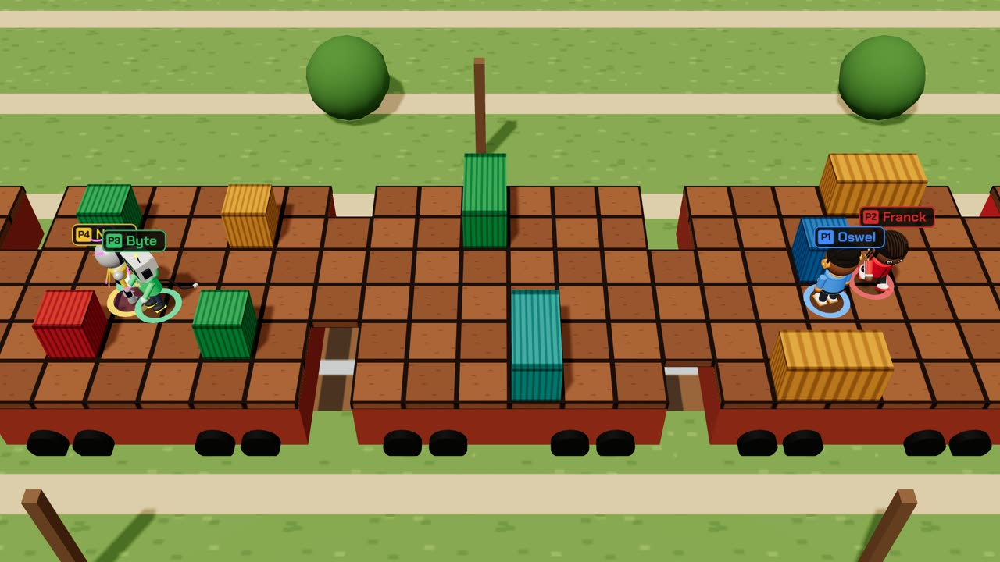
Pas encore d'application sur l'App Store : sur iPhone, iPad et Mac, le jeu se joue dans le navigateur. Toutes les versions et l'historique : page GitHub du jeu.
Chaque monde raconte une étape du parcours d'Oswel. Chaque niveau cache des pièges, des pièces, des secrets — et une leçon.
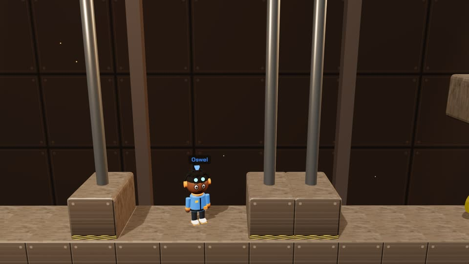
La mécanique. Comprendre comment les choses fonctionnent.
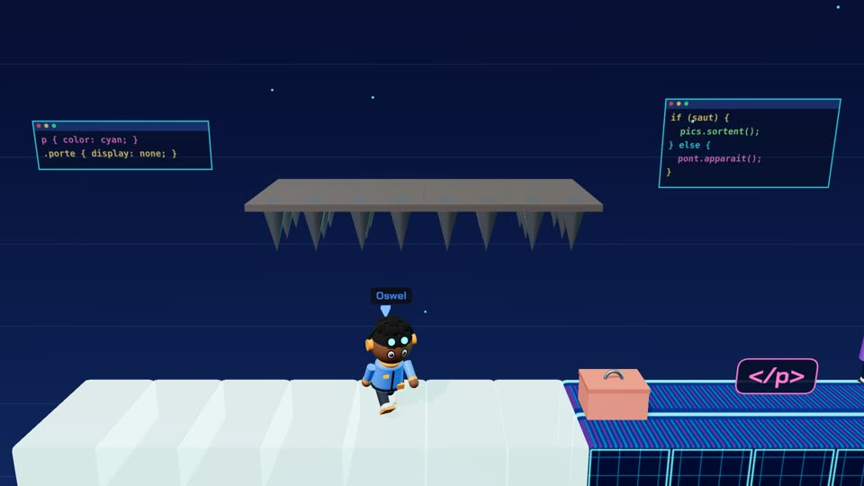
La programmation. Apprendre à créer.
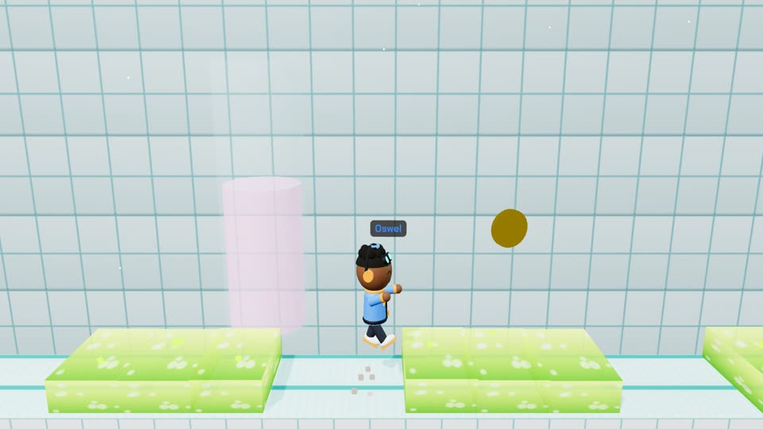
L'ingénierie. Comprendre l'ingénierie.
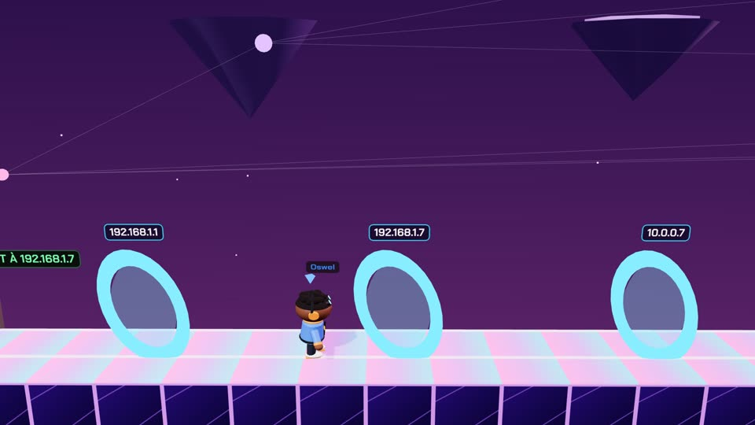
Internet et l'IA. Imaginer.
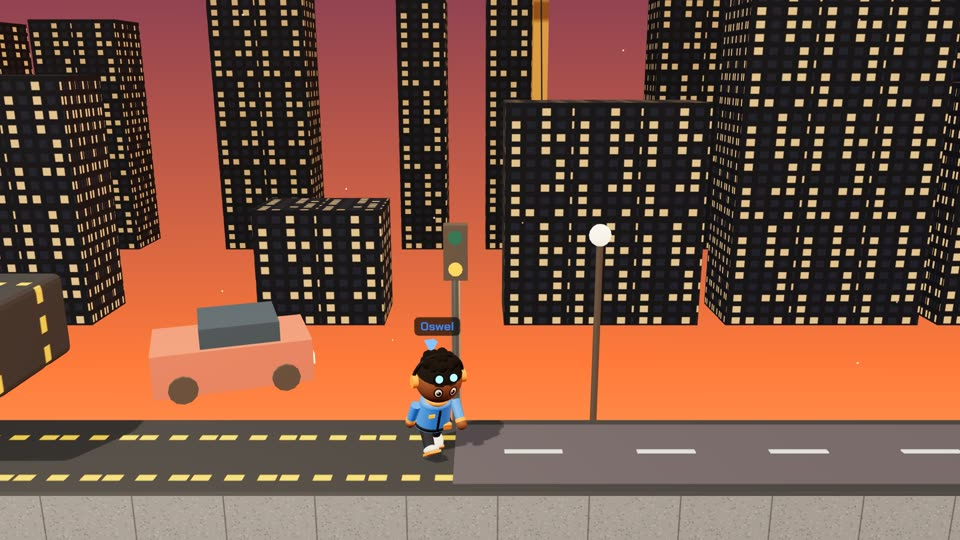
Le métier. Construire mon propre avenir.
Un bloc solide ? Il tombe. Une sortie ? Elle s'enfuit. De « l'eau verte » ? C'est de l'acide. Oswel's Trap est un jeu de plateforme troll : tu vas mourir, beaucoup, et apprendre à te méfier de tout. Points de reprise, indices et quêtes sont là pour t'aider.
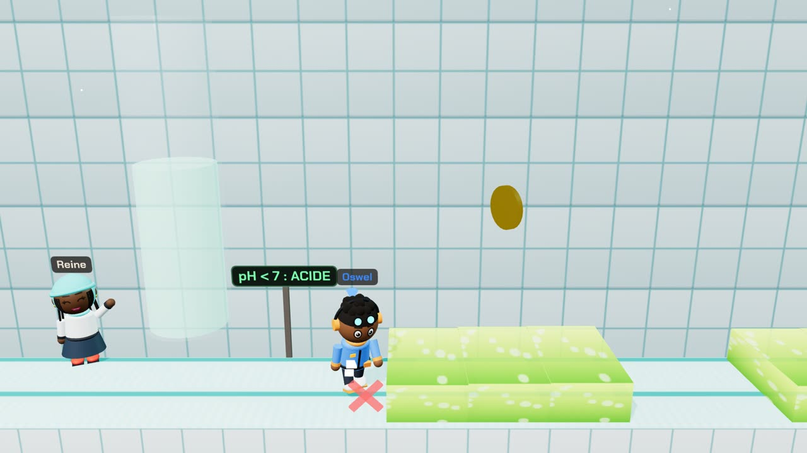
L'antichambre, l'arène, puis la fuite. Chaque boss a ses phases, ses signaux et ses points faibles.
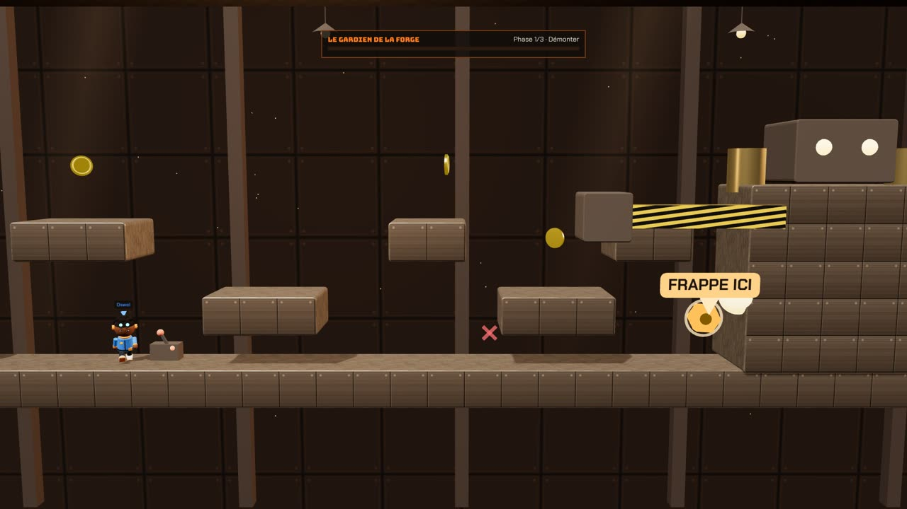
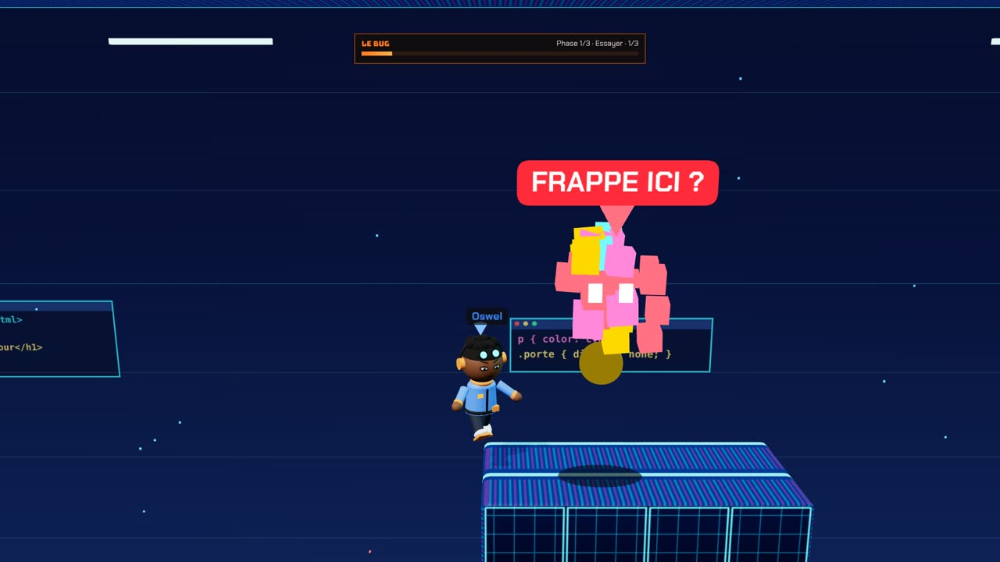
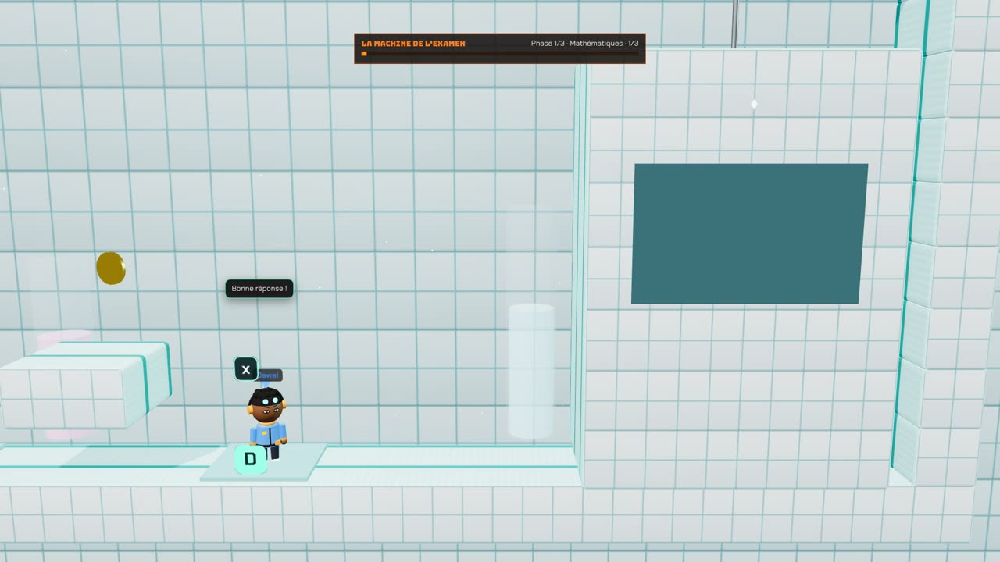
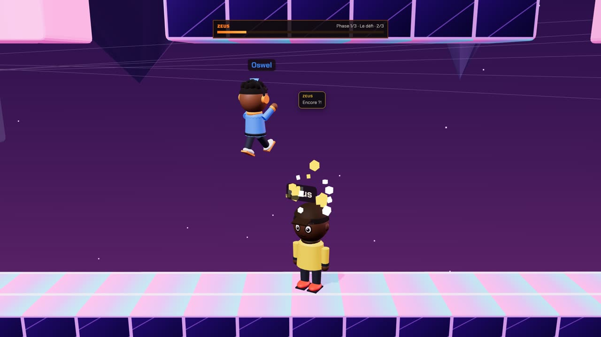
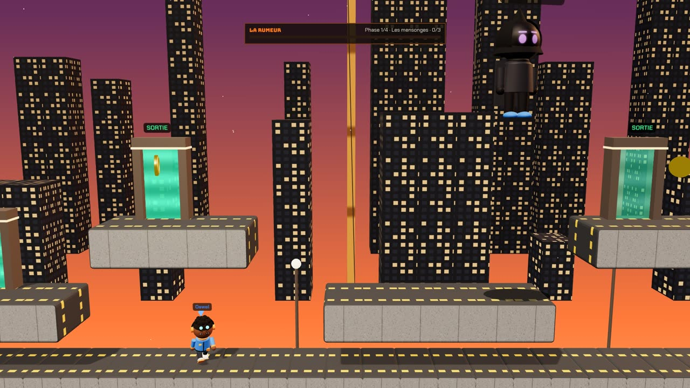
Le mentor
« Ça plante ? On recommence. »
Calme, pédagogue, un humour sec : c'est lui qui a appris à coder à Oswel. Joue-le et débloque un pouvoir par monde, chacun avec sa leçon.
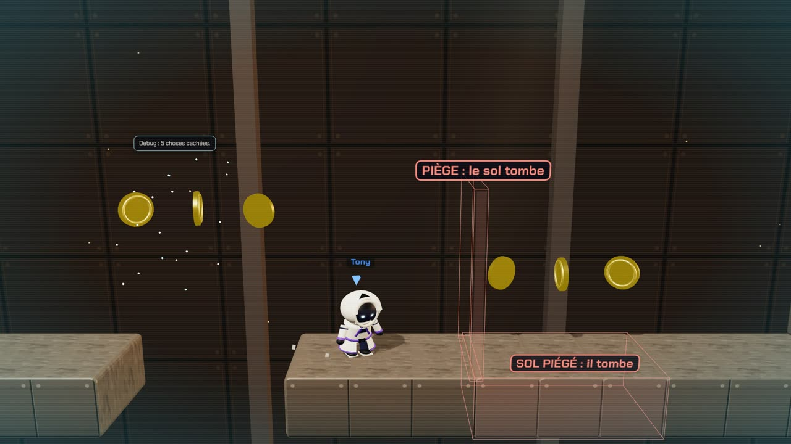
Beaucoup sont inspirés de vraies personnes de l'entourage d'Oswel.
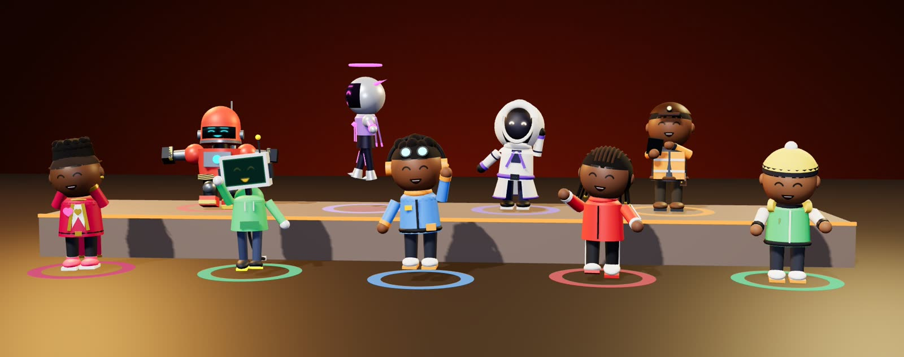
Jusqu'à 4 joueurs
Dix mini-jeux vus de dessus, à jouer entre amis — ou contre des bots qui suivent les mêmes règles que toi.
Solo · Coop · Versus — au clavier (deux joueurs sur un clavier), à la manette (jusqu'à 4, vibrations et lumière PS4) ou au doigt.
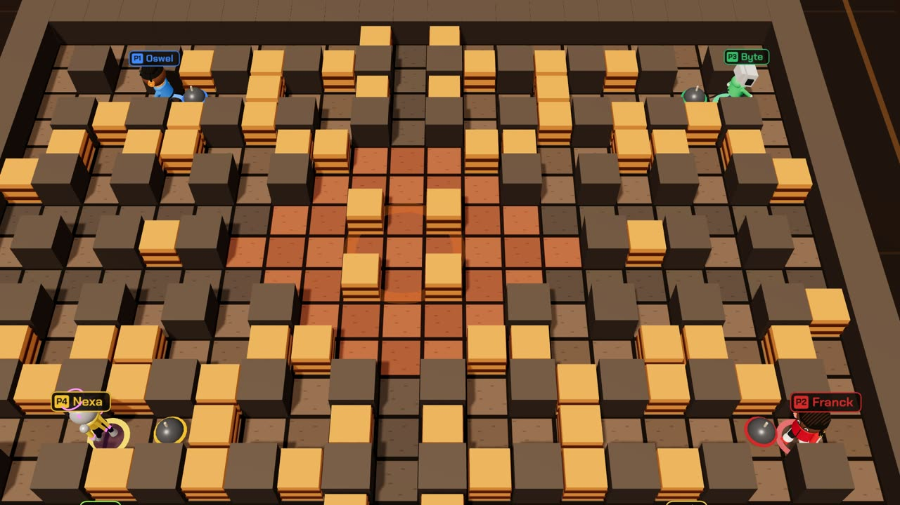
Touche une image pour l'agrandir.
Oui : pas de paiement, pas de publicité, pas de compte à créer.
Non. Internet sert seulement à télécharger le jeu. Même le jeu à plusieurs en réseau local marche sans internet.
C'est parce que le jeu n'est pas encore « signé » (une signature coûte cher pour un jeu indépendant). Clique sur Informations complémentaires puis Exécuter quand même.
Autorise ton navigateur (ou ton gestionnaire de fichiers) à installer des applications inconnues : Paramètres → Applications → ton navigateur → Installer des applis inconnues.
Sur un même PC : deux joueurs au clavier, ou jusqu'à 4 manettes. En réseau local : un PC héberge, les téléphones scannent le QR code et deviennent des manettes.
Les manettes PS4 sont reconnues (avec vibrations et lumière), ainsi que les autres manettes compatibles avec le PC ou le téléphone.
Le jeu se joue dans le navigateur : ouvre oswels-trap.netlify.app/jouer dans Safari. Sur iPhone, touche Partager puis Sur l'écran d'accueil pour l'avoir comme une application, en plein écran et même sans internet. Il n'y a pas encore d'application sur l'App Store.
Oui, sur n'importe quel appareil : bouton Jouer dans le navigateur. Le premier lancement charge environ 4 Mo, puis les voix au fur et à mesure. Pour héberger une partie en réseau local, il faut en revanche la version PC.
Sur ton appareil. Le jeu garde tes profils, ta progression et tes records localement.
Comment installer ?
.exetéléchargé..zipet lance Oswel's Trap.exe.